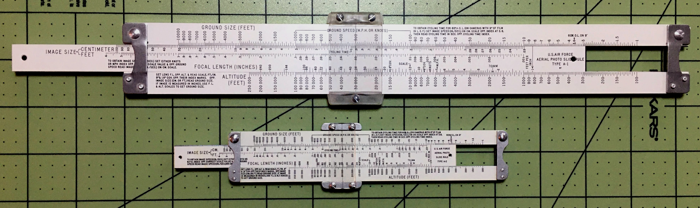
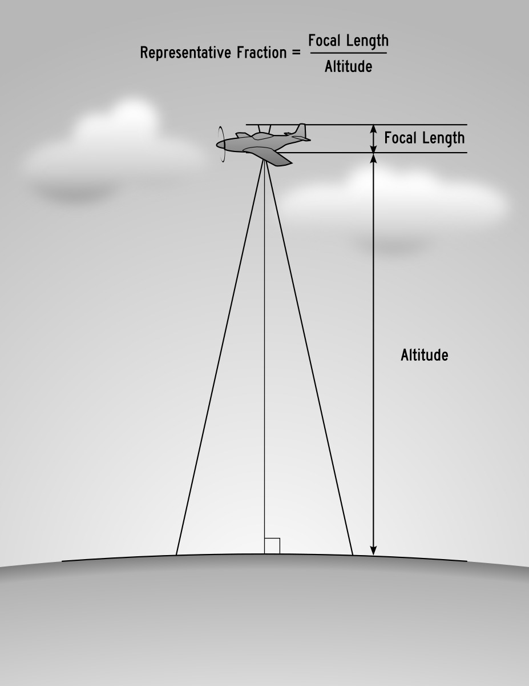
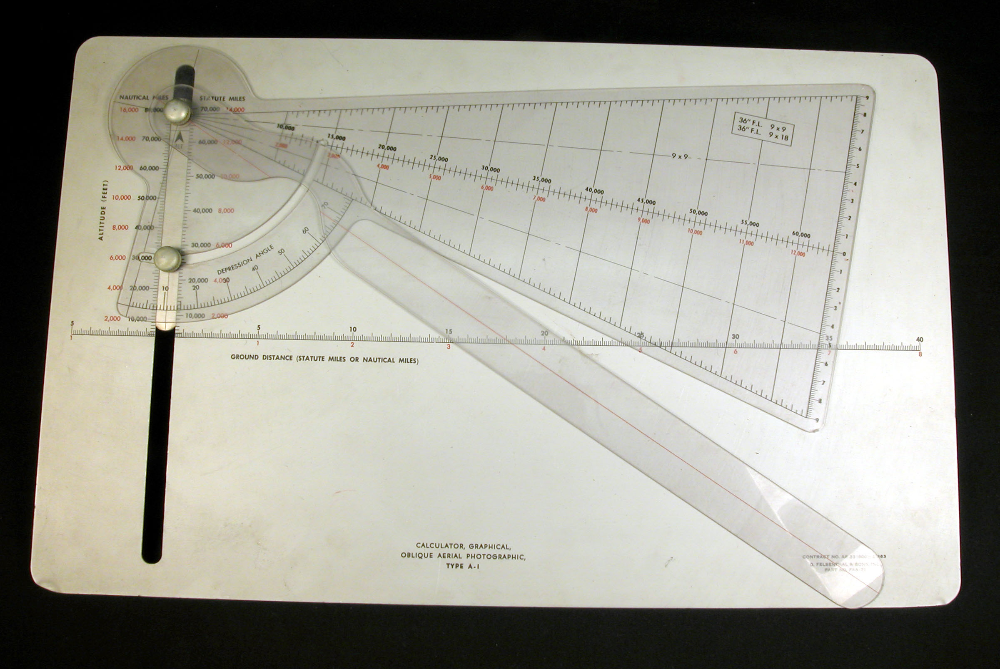
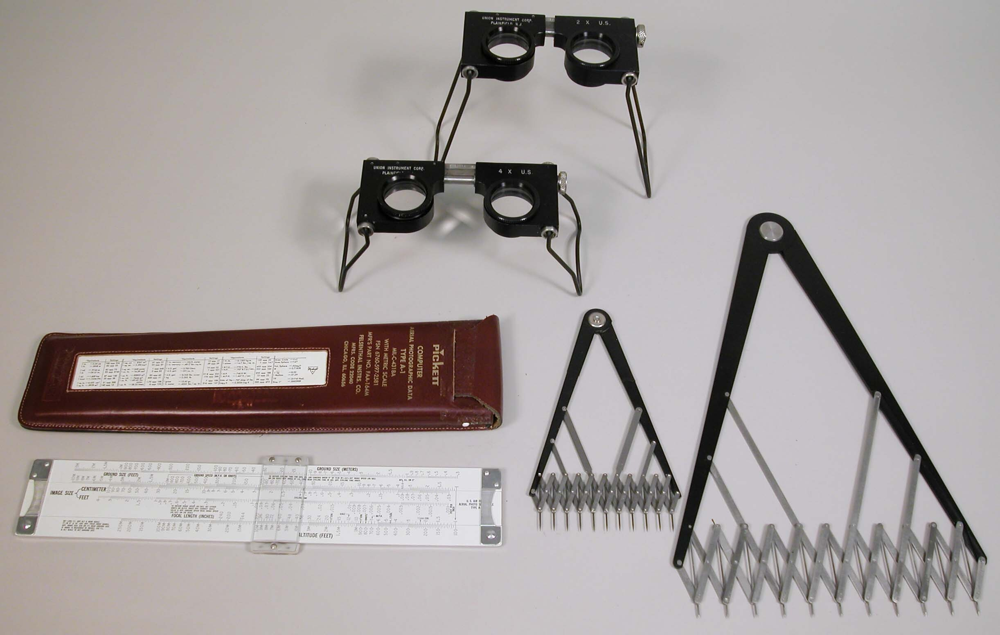
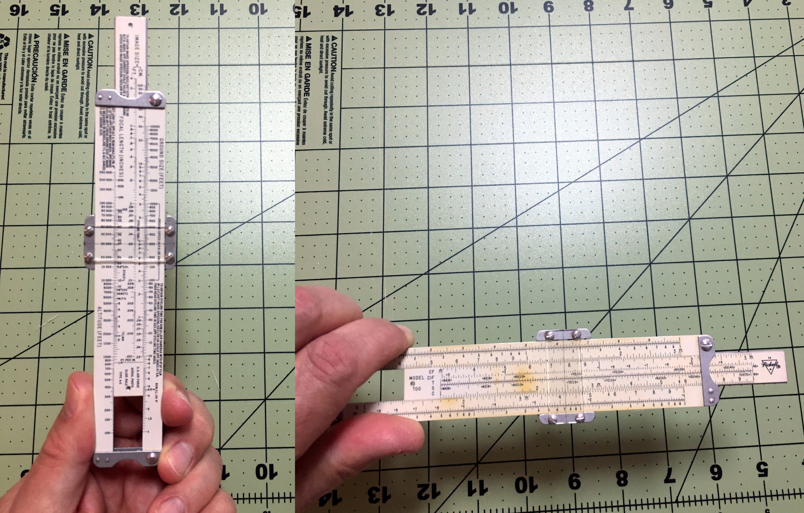
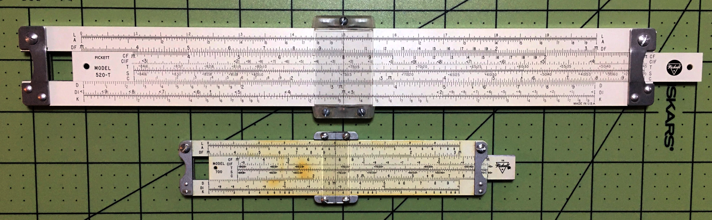
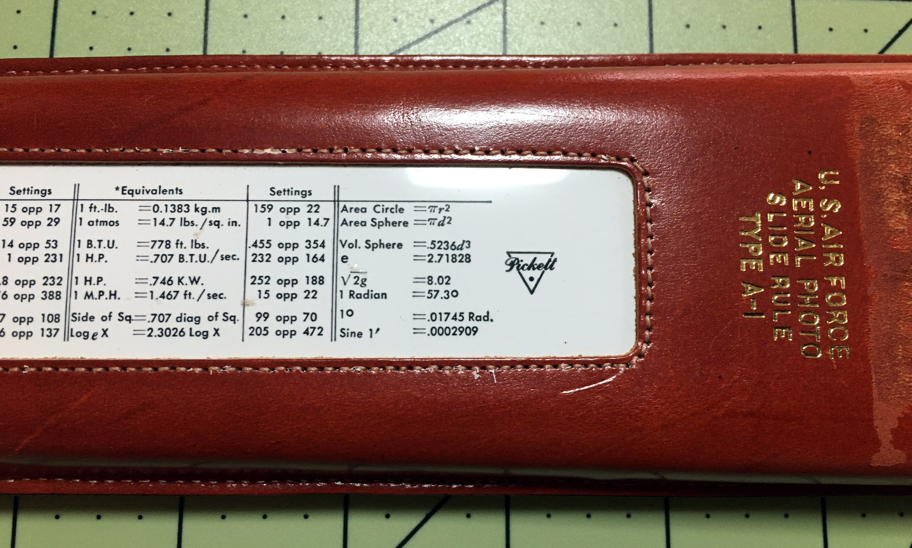

Eric Rinehart
 FIGURE 1: Pickett Models 520 & 700
In 2020, as I began to take an interest in slide rules, I started to look at slide rules on Ebay. Before long, I found a rule called an “Aerial Photography Slide Rule.” It was a Pickett Model 700, an aluminum pocket-size slide rule with standard scales on one side. On the other side, it had scales with interesting labels like “Altitude”, “Focal Length”, and “Image Size”. Its specialized design and apparent purpose piqued my curiosity, so I ordered it.
A few days later, I marveled at the little aluminum jewel in my hands. As I studied it, I began to wonder exactly what problems it was designed to solve. How did its designers decide on the range of values for its aerial photo scales? What about the scales on the rule’s “rear”?
The first source of information I found about the rule was its operating manual, which I found on the International Slide Rule Museum web site. The manual described the rule’s basic operation, and some of the philosophy behind its design. It also told me that the rule was designed by Amrom H. Katz. Interestingly, it also refers the reader to an article written by Katz in Photogrammetric Engineering: Contributions to the theory and mechanics of photo-interpretation from vertical and oblique photographs.1
I liked the Model 700 so much that I found and purchased its big brother, the Model 520, also from Ebay. This rule came with its cardboard box, leather case, and original manual.
As I searched for more information about these Aerial Photo Slide Rules, I stumbled upon Nathan Zeldes’ article “A Calculator Hidden in a book”2 about a different device designed to solve a similar problem. Zeldes’ curiosity and exploration of the Cornell “How Many?” device, along with his mention of the Pickett Model 700, inspired me to research further and to consider writing an article of my own.
It took me a while to find it, but I did eventually find Katz’s article in Photogrammetric Engineering. Reading this, and other articles Katz wrote for the Rand Corporation, gave me an appreciation for the man’s writing style and insight to problems of aerial photography.
 FIGURE 2: Representative Fraction
The Aerial Photo Slide Rule was designed primarily to calculate the representative fraction, or scale, of aerial reconnaissance photographs. The representative fraction is the ratio of the focal length of the camera to the altitude from which the photo is taken.
One example from the Model 520/700 manual is that of a photograph taken with a camera with 36 inch focal length from an aircraft flown at 30,000 feet altitude. The representative fraction for that photograph is 3’:30,000’, or 1:10,000. From there, other information about a photograph can be extrapolated, such as the size of objects on the ground, and distances between them.
These problems are just proportions. Proportions are right in a slide rule’s wheelhouse.
The Royal Air Force had published a set of tables of representative fractions, image sizes, and resulting ground object sizes for aerial photography interpreters. First, the Photo-interpreter had to calculate the representative fraction manually, then look up the image and ground object sizes in the tables. These tables had many thousands of entries (maybe millions?), and were cumbersome.
Before designing the Aerial Photo Slide Rule, Katz constructed a nomograph to help solve representative fractions, but he soon found that “even a nomograph is somewhat clumsy to use.”3 so he constructed an experimental Aerial Photo Slide Rule.
The article shows photos of an early version of the Aerial Photo Slide Rule, constructed from “inexpensive vinyl plastic.”4 Its Altitude scale only goes up to 60,000 feet, and its focal length scale only to 100 inches. Otherwise, its design is similar to the finished product that appears on the Pickett Aerial Photo Slide Rule.
The next question that came to my mind was, “How did Katz arrive at a maximum altitude of 250,000 feet?” As it appeared this rule would have been designed around 1950, what aircraft would have been used for aerial photo reconnaissance? This question by itself captured my imagination for a few weeks, searching for aircraft and aerial reconnaissance practices in late World War II through the early Fifties.
The first aircraft I thought of were the U-2 and A-12 / SR-71, which were still years away from their introductions in 1950. Even if the aerial reconnaissance rule were designed with those future aircraft in mind, the maximum altitude of the U-2 and SR-71 is 70,000 feet and 85,000 feet respectively, depending on your source of information.
Orbital spy satellites were still several years off in 1950. Sputnik did not orbit the Earth until 1957, and the perigee of its orbit was over 700,000 feet, so the altitude doesn't work either.
Maybe a sub-orbital platform launched via rocket? The most likely example of this would be the German V-2 rocket. Its maximum altitude was around 291,000’. I found one photo taken from a V-2, but no evidence that they were commonly used for this purpose, either by the Germans or Americans.
What about a balloon? I found information about a “Project Genetrix”, but it seems the maximum altitude for that project was about 100,000’.
I found an interesting web site called Air Recce5 that shares information about aerial reconnaissance as it was done during World War II. This was exactly what I needed.
Air Recce and Wikipedia both seem to show that the aircraft used most for aerial reconnaissance during and just after World War II were versions of the North American P-51 Mustang known as the F-6, and the Lockheed P-38 Lightning known as the F-4 and F-5. The F-4 and F-5, “...as a reconnaissance aircraft, obtained 90 percent of the aerial film captured over Europe.”6 Both of these aircraft could fly over 40,000 feet. Many of the examples in the Model 520/700 manual use an altitude of 30,000 - 40,000 feet, so it seems likely this is what Katz had in mind.
Also of interest is the RB-36D, a Photo Reconnaissance version of the Convair B-36 Peacemaker. This could fly over 50,000 feet, carry multiple cameras, and had a long range. The RB-36D becomes important in the discussion about aerial reconnaissance cameras.
I seemed no closer to finding the answer to my question: why a maximum of 250,000 feet?
I finally found the answer in Katz’s article in Photogrammetric Engineering: “…to permit the use of this slide rule in oblique photography computations”.7 (emphasis mine)
The Model 520/700 manual states that “the problems associated with oblique photography are much more difficult than the corresponding problems in vertical photography” and that “This slide rule can be used in conjunction with other aids for oblique photography; these are now under development…”.
Katz’s article in Photogrammetric Engineering discusses these “other aids”.8 The Smithsonian National Air and Space Museum has a prototype, dated 1949, donated by Katz:9
 FIGURE 3: Calculator, Graphic, Oblique, Aerial Type A-1, Prototype, with 18 Transectors, Smithsonian Air and Space Museum, Photographer: Carl J. Bobrow
“Why a maximum focal length of 240 inches?” I found the answer to this question as I was researching likely aircraft. In his article, Katz mentions the K-24 and other cameras with a focal length from 24 to 36 inches. These were often carried by the F-5 and F-6, and Katz refers to them in examples in his article.10
However, while reading about the RB-36D, I read that it could be equipped with something called the “Boston Camera”. The Boston Camera had a focal length of 240 inches, and: “a photo interpreter could detect a golf ball from an altitude of 45,000 feet (14,000 m).”11
The Boston Camera was not manufactured until 1951, and was used sparingly. The Boston Camera may not have been used frequently because it was sensitive to aircraft vibration.12 Cameras with 24- to 36-inch focal lengths were much more common.
The Pickett Model 520/700 has gauge marks for what are probably common focal lengths: 24 inch, 36 inch, 48 inch, 72 inch, 96 inch, and 144 inch.
The ground speed scale is used to calculate image speed and cycling time.
The ground speed scale reads up to 1,000 Miles per Hour / Knots. I didn't find any aircraft likely to be used for aerial reconnaissance around 1950 with such a high top speed. It is my guess that 1,000 Miles per Hour was a “nice, round figure” that allowed for future developments.
The ground speed scale on the rule is used to calculate “image speed” arising from forward aircraft speed. After aligning the “M.P.H.” mark with the representative fraction, setting the cursor to the “ground speed” will show the image speed in Inches Per Second.
The Aerial Photo rule can be used to calculate cycling time between exposures, how many exposures are required to survey a given area, the required altitude to photograph an object of a given ground size at a desired image size, and a minimum altitude given a flight speed and requirement for sixty percent image overlap on a given size of film. A sixty percent overlap in adjacent photos produces stereoscopic aerial views.
 FIGURE 4: Kit, Photo Interpretation, Felsenthal, Type BS 9A, partial, Smithsonian Air and Space Museum, Photographer: Carl J. Bobrow
This photo interpretation kit includes a Pickett 52T Type-A1 Aerial Photography Slide Rule, two different Magnifying Stereoscopes, and Proportional Dividers.13 The 52T varies from the Model 520 / 700 by including a “Ground Size Meters” scale in addition to the Ground Size Feet scale.
In our correspondence, James Bready noted to me that when switching from one side of the rule to the other, on most rules, you would rotate the rule along its long axis, and the rule is still oriented correctly. However, the Aerial Photography Rule seems to be set up to flip end-for-end to switch sides of the rule. James pointed out that that seems to be the case for all of the different makes of aerial photography rules that he has. I had noticed the same thing, though I had not given it much thought until then.
Page eight of the manual states, “When the Aerial Photo side of the slide rule is used, the rule must be held vertically.” When the rule is held vertically for Aerial Photo use, in the left hand, palm up, switching to the “rear” of the rule is easy to accomplish by rolling the left wrist to the right, presenting the rear of the rule in its correct orientation. I think this is how the rule is meant to be used.
 FIGURE 5: Transition from Front to Rear Scales of the Pickett Model 700
I wondered about whether the calculations done with the rule would be precise and accurate enough to provide useful intelligence for the photo interpreter. Katz addresses the question of Precision and Accuracy in his article in PHOTOGRAMMETRIC ENGINEERING:
Briefly stated, precision refers to the reproducibility of the measurement operation, whereas accuracy refers to the essential truth of the measurement, i.e. its nearness to the true value.14
It is a serious and pernicious fallacy to believe that because computations are made with a modern electric calculator, "answers" can be written down embodying all the figures cast up by the machinations of the calculator.15
Katz expands on this in some of his other articles.
First, the photo interpreter does not need to find the dimensions of a ground object down to fractions of an inch. The question is one of whether the object on the ground is a foxhole, a missile launch site, or an airfield, for example. From Some Notes on the History of Aerial reconnaissance16
Second, there are other sources of error in the process of obtaining the aerial photographs. These sources include whether the film lies flat in the camera, the motion of the shutter with respect to the airplane's path, errors in measurement of the airplane’s altitude, errors in the stated focal length of the camera, and whether the photo is actually vertical. Katz states that these errors can be as much as 10%, whereas the “Ground Size” scale can be read within 0.1% on the 10” rule. So, the Aerial Photography rule provides plenty of accuracy for the job at hand. Katz, PHOTOGRAMMETRIC ENGINEERING, 1950. page 35517
It is interesting to note that once the enemy became aware of aerial photography, he would camouflage the sites to hide what was there. However, the photo interpreter would make educated guesses based on the size of the camouflaged area, combined with other sources of intelligence. Interpretation Of Military Installations From Aerial Photographs, Jones, p. 49818
 FIGURE 6: Rear of Pickett Models 520 & 700
Katz made a recommendation about what scales should be on the “rear” of the Aerial Photography rule: “The reverse side of the rule will be a newly arranged standard 10 inch rule, having the normal, folded and inverted scales (C, D, CF, DF, DIF, DI), the square and cube scales (A & K), the sine and tangent scales (S & T), and the log scale (L).19”
Pickett’s selection of scales for the “rear” of the Model 520/700 is close to Katz’s recommendation: L, A, DF | CF, CIF, T, S, C | D, DI, K
James Bready shared images of some Aerial Photography rules that he has, and the BRL 54 aerial photo rule has the following scales on its rear: S&T, A | B, S, T, C | D
So it appears that there is no “standard” for the scales on the rear of the aerial photography rule, but Pickett’s rules seem to reflect the scale set that Katz had in mind.
I wondered if it would make sense to have an ST scale to calculate small angles for “slightly oblique” aerial photos. Or maybe other scales for triangles with small apex angles, like the scales of the Model 14 Artillery rule?
I was also curious about the inclusion of the CIF scale rather than the more-common CI scale. Certainly the CIF scale can be used in the same way as CI, but I would like to know more about this choice.
I found some insight into these scale selections while perusing Pickett Slide Rule catalogs on the International Slide Rule Museum. The 1954 Pickett All-Metal Slide Rules Catalog 164-A20 includes not only the Model 520 and 700 “U.S.A.F. AERIAL PHOTO SLIDE RULES”, but also a Model 706-S.
The Model 706-S is a rule with the same scale set as the “rear” of the Model 700 on the front, and the rear is blank. The 164-A catalog calls the scale set a “complete Trig Scale arrangement all on one side of the rule - available only on Pickett Pocket Rules”. The catalog markets the 706-S with “Your Imprint On Rule And Case”, with your company’s product or trade mark on the rear of the rule, or as a “Special Conversion Rule”, with your company’s own conversion factors on the rear of the rule.
So, it would appear that the Model 700 is a “Special Conversion Rule”, but this doesn't answer the question of “which came first, the 700, or the 706-S?”
It is also interesting that while there is a “Full Size Special Conversion Rule”, it is the 903-S, which has a different, though similar, scale set from the 520/700: K A DF | CF T S CI C | D L
The scale set on the “rear” of the 520 is the same as that of the 700.
Another unique feature of the Model 520/700 is the case. For each of the rules, its case is the standard leather case for its size, but with a table of equivalents and settings for conversion factors set into a window added to the case.
 FIGURE 7: Closeup of Pickett Model 520 Case
As a tool designed to solve an interesting problem, and as a cold war artifact, the USAF Aerial Photo Slide Rule is an interesting addition to my slide rule collection. Exploring its origins has been fun, and I find this aspect of the slide rule hobby one of the most enjoyable. I hope this exploration has been enjoyable for you as well.
I wish to thank my wife Alyssa for her encouragement and proofreading, James Bready for his encouragement and assistance, Nathan Zeldes for inspiration, and Michael Konshak for the wonderful resource that is the International Slide Rule Museum.
I also wish to thank the Smithsonian Air and Space Museum for their permission to use images from their collection in this article.